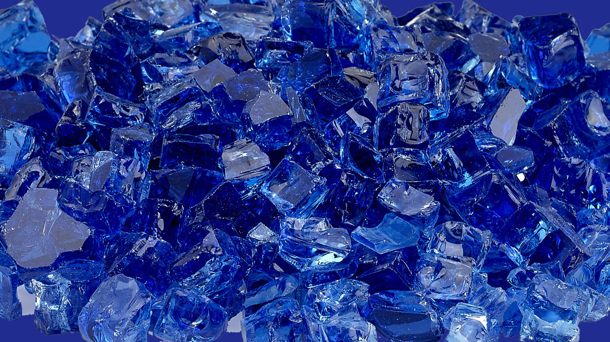

L’exploitation des terres rares : un enjeu écologique
La construction d’un moteur électrique et d’une batterie lithium-ion demande beaucoup de matières premières. Ces matières premières sont notamment ce que l’on appelle des métaux rares comme le cobalt, le lithium, le graphite, le manganèse, le nickel… Des métaux recherchés pour leur propriété chimique unique mais dont l’extraction demande beaucoup d’énergie.
Image représentant le cobalt (terre rare) :
Ces métaux rares sont en quantité limités et leurs exploitations polluent également. L'extraction du lithium dans les mines, indispensable dans une batterie lithium-ion, nécessite l'utilisation d'énorme quantité d'eau. 80% de la production mondiale de ce minerai se trouvent en Amérique latine (en Argentine, au Chili et en Bolivie) dans des régions arides. Les régions arides sont des zones dans lesquelles les précipitations sont faibles. Donc il faut davantage d'eau pour extraire le lithium. Les produits chimiques sont massivement utilisés dans l’extraction du lithium. En général, ces pays peinent de plus dans l’implémentation de lois environnementales.
L’industrialisation de l’extraction de lithium mène également à la pollution et à l’introduction de produits chimiques dans les systèmes hydrauliques, ainsi qu’à la destruction de grandes surfaces de terre dans des plaines de sel, détériorant son paysage unique.
Quant au cobalt, son extraction pose des problèmes en termes d’exploitation d’ouvriers causant de nombreux morts.
La République démocratique du Congo (RDC), un des pays les moins développés du monde, détient près de la moitié des ressources globales en cobalt et représente 60% de la production mondiale. La réglementation de cette industrie est pourtant pratiquement inexistante en RDC, un pays où les institutions sont toujours très faibles, en grande partie à cause de son histoire d’exploitation étrangère depuis la période coloniale.
Avec l’augmentation de la demande, l’extraction du cobalt se fait de plus en plus dans des mines artisanales congolaises, dans des conditions souvent déplorables. Généralement, des travailleurs, y compris des enfants, creusent avec un équipement de base dans des tunnels dangereux. Alors que le risque mortel d’effondrement est permanent, ils gagnent à peine assez pour se nourrir.
Le cobalt pourrait de manière inquiétante devenir une source de revenu importante pour des groupes armés, avec pour effet possible de créer de nouveaux conflits dans le pays.
Donc même si le cobalt n’a pas de conséquence égologique directe, son extraction entraine de nombreux décès et peut être à l’origine de futurs conflits (source de pollution).